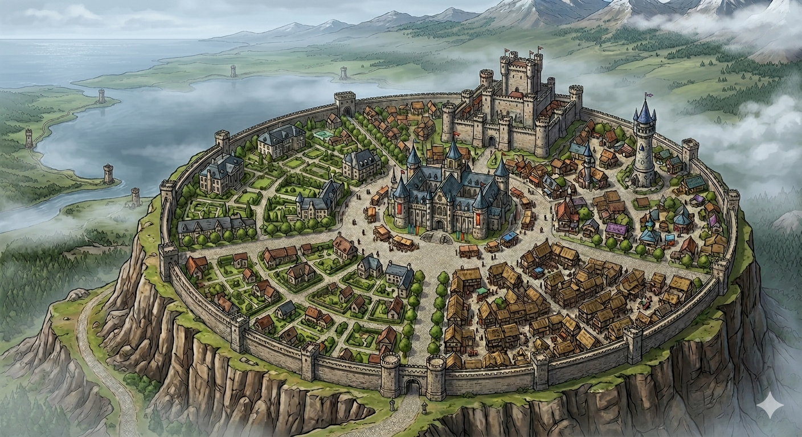

Settlement
Highreach

Overview
Capital of the Crestfall Kingdom. An awe-inspiring city perched atop a natural plateau, with steep cliffs on three sides and breathtaking views. Ancient fortifications blend with modern structures across a thriving cityscape.
Arrival
As you pass through massive, ornately decorated gates set into thick stone walls, the vibrant bustle of the main thoroughfare greets you. Shops and stalls line the road with colorful banners. Merchants call out over the clanging of hammers, chatter of townsfolk, and melody of street musicians. The castle dominates the skyline atop the central plateau.
Geography
- Natural plateau with steep cliffs on three sides
- Castle atop the central plateau, visible from the main road
- Noble District, Merchant District, Blacksmith District
- Extensive underground tunnel network (sewers and maintenance)
Banner
- Symbol: A raised silver fist with a gold crown hovering above
- Background: Rich burgundy or deep navy
Infrastructure
- Highreach Adventurers Guild — imposing guildhall with warrior statues and stained glass
- HighReach Merchants Guild — refined stone building in the Merchant District
- The Warren — Exterminators Guild headquarters
- Target by Tradewind — adventuring supplies
- The Dragons Breath Forge — dwarven blacksmith
- The Arcane Enclave — magical goods
- Sturdy Mugg — popular dwarven inn
- Castle — royal seat atop the plateau
Economy
- Trade hub regulated by the Merchants Guild
- Blacksmith district with multiple forges
- Adventuring economy driven by guild contracts
- Market stalls with produce, fabrics, jewelry, and enchanted trinkets